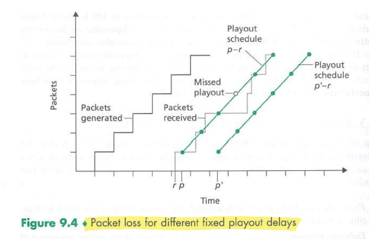
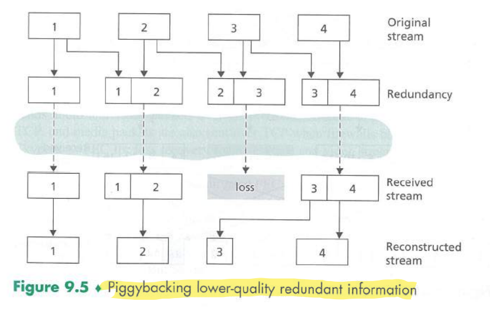
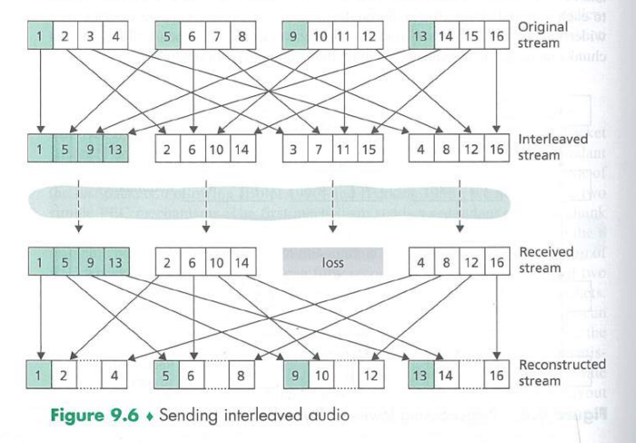

↩️ ttm4100
Voice-over-IP
Real-time conversational voice over the Internet is commonly called Voice-over-IP.
Limitations of the Best-Effort IP Service
The receiver must take more care in determining (1) when to play back a chuck, and (2) what to do with a missing chunk.
Packet Loss
Loss could be eliminated by sending the packets over TCP (which provides for reliable data transfer) rather than over UDP. However, retransmission mechanisms are often considered unacceptable for conversational real-time audio applications.
Most existing VoIP applications run over UDP by default. Packet loss rates between 1 and 20 percent can be tolerated, depending on how voice is encoded and transmitted, and on how the loss is concealed at the receiver.
Forward error correction (FEC) can help conceal packet loss. With FEC, redundant information is transmitted along with the original information so that some of the lost original data can be recovered from the redundant information.
End-to-End Delay
End-to-End delay is the accumalation of transmission, processing and queuing delay in routers, propagation delay in links, and end-system processing delays.
Packet Jitter
Because of varying queuing delays, the time from when a packet is generated at the sourcce until it is received at the receiver can fluctuate from packet to packet. This is called jitter.
Jitter can often be removed by using sequence numbers, timestamps, and a playout delay.
Removing Jitter at the Receiver for Audio
The receiver should attempt to provide periodic playout of voice chunks in the presence of random network jitter. This is typically done by combining the following two mechanisms:
- Prepending each chunk with a timestamp.
- Delaying playout of chunks at the receiver. (Buffering)
Fixed Playout Delay

Adaptive Playout Delay
Uses a smoothed average of the observed network delays. The estimate places more weight on the recently observed delays.
Recovering from Packet Loss
Retransmitting lost packets may not be feasible in a real-time conversational application such as VoIP.
VoIP applications often use some type of loss anticipation scheme. Two types are FEC and interleaving.
Forward Error Correction (FEC)
For the cost of marginally increasing the transmission rate, the redundant information can be used to reconstruct approximations or exact versions of some of the lost packets.

Interleaving
Interleaving can significantly improve the perceived quality of an audio stream, but it does increase latency.

Error Concealment
Perhaps the simplest form of receiver-based recovery is packet repetition. This replaces lost packets with copies of the packets that arrived immediately before the loss.
Interpolation performs somewhat better then packet repetition but is significantly more computationally intensive.
Case Study: VoIP with Skype
Each user sends its audio stream to the conference initiator. The initiator combines the audio streams into one stream (basically by adding all the audio signals together) and then sends a copy of each combined stream to each of the other N - 1 participants.
VoIP systems such as Skype, WeChat, and Google Talk introduce new privacy concerns.